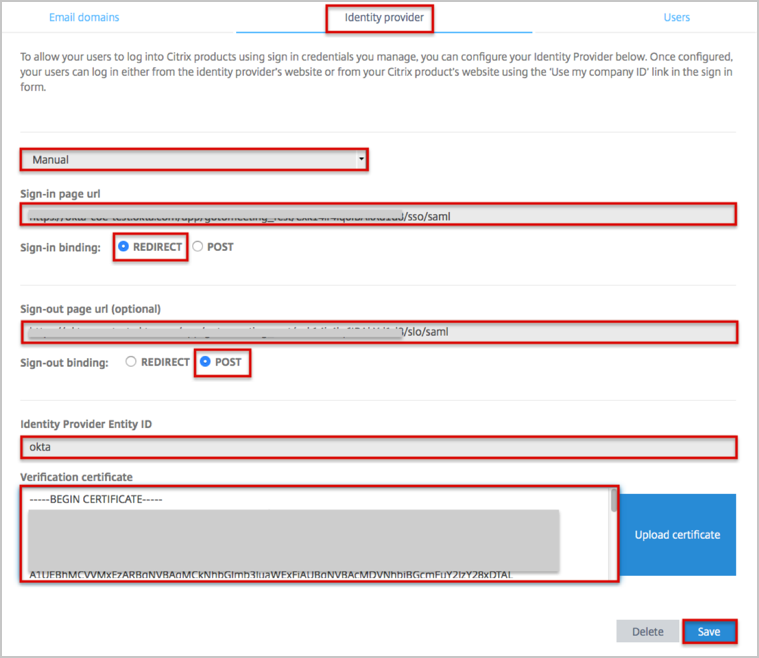
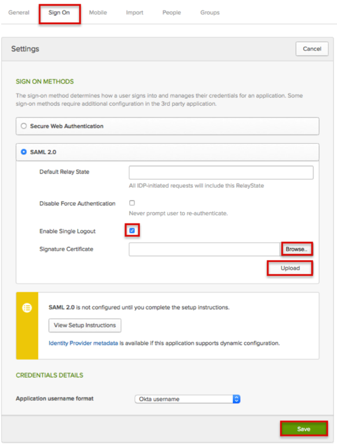
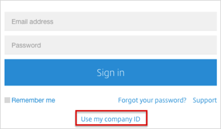
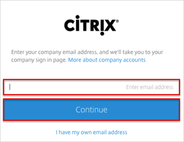

Log into the Organization Center, here: https://account.citrixonline.com/organization/administration/.
Navigate to the Identity provider tab and enter the following (see screen shot at end of step for reference):
Select Manual from the dropdown menu.
For the Sign-in page url, copy and paste the following:
Sign into the Okta Admin Dashboard to generate this variable.
Sign-in binding: Select REDIRECT.
The Sign-out page url is optional. Copy and paste the following URL if you need to configure single logout.
Sign into the Okta Admin Dashboard to generate this variable.
Sign-out binding: Select POST.
Note that if you are configuring single logout, you also need to enable single logout in Okta, see step 3, below.
For the Identity Provider Entity ID, copy and paste the following:
Sign into the Okta Admin Dashboard to generate this variable.
For the Verification certificate, copy and paste the following:
Sign into the Okta Admin Dashboard to generate this variable.
Click Save.

If you are configuring Single Logout, you also need to enable single logout in Okta, as follows:
Go to https://citrix.sharefile.com/d-s4ce11571a4c444f8 and click Download to download and save your citrix x.509 certificate.
In Okta, select the Sign On tab for the Citrix app, then:
Check the Enable Single Logout box.
Click Browse to locate the citrix certificate you downloaded and saved earlier, then Upload as shown below.
Click Save.

Done!
Notes:
IdP-initiated flows, SP-initiated flows and SP-initiated SLO are supported.
Just In Time (JIT) provisioning and IdP-initiated SLO are not supported.
For SP-initiated flows:
Go to the appropriate Citrix product login page:
For GoToMeeting: https://global.gotomeeting.com/.
For GoToWebinar: https://global.gotowebinar.com/.
For GoToTraining: https://global.gototraining.com/.
For OpenVoice: https://global.openvoice.com/.
For GoToAssist (Remote Support/Service Desk/Monitoring): https://app.gotoassist.com/.
For GoToAssist (SeeIt): https://seeit.gotoassist.com/.
Click on Use my company ID

Enter your email address, then click Continue.
